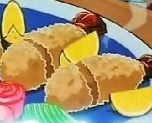
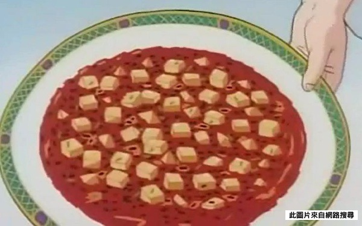

本週特價推薦

炸鳳尾蝦
我的料理是炸鳳尾蝦，就是將蝦子裹碎核桃去炸的。鮮脆可口的核果外衣經由炸後其香味立即倍增，堪稱人間第一美味。 搭配特製醬汁食用，味道更是妙不可言，跟醬汁的巧妙組合正是這道料理的精華所在。

魔幻麻婆豆腐
擁有一般麻婆豆腐所具備的「辣」「香」「色」「燙」「麻」五個特色之外的第六個特色「酥」，進而形成「六神合體六味一體」的味道 對腸胃負擔極小，久未進食的人連吃好幾份也沒事 以處理過的大豆代替絞肉，因為大豆沒有絞肉中的肉筋所以吃起來會產生酥爽的口感
Web_Homework 102360032